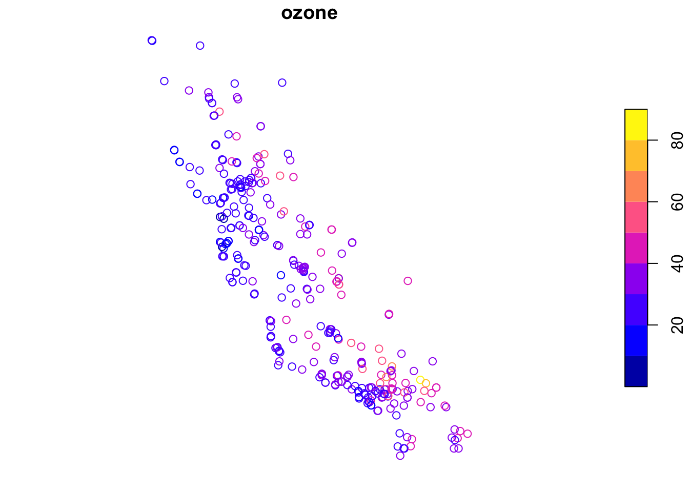
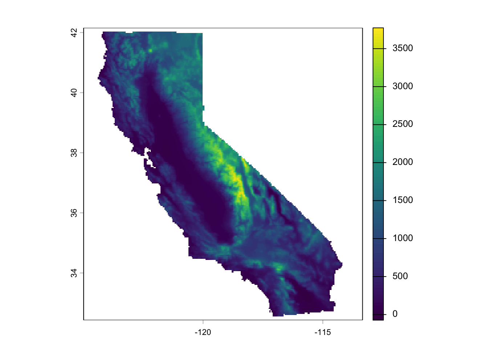
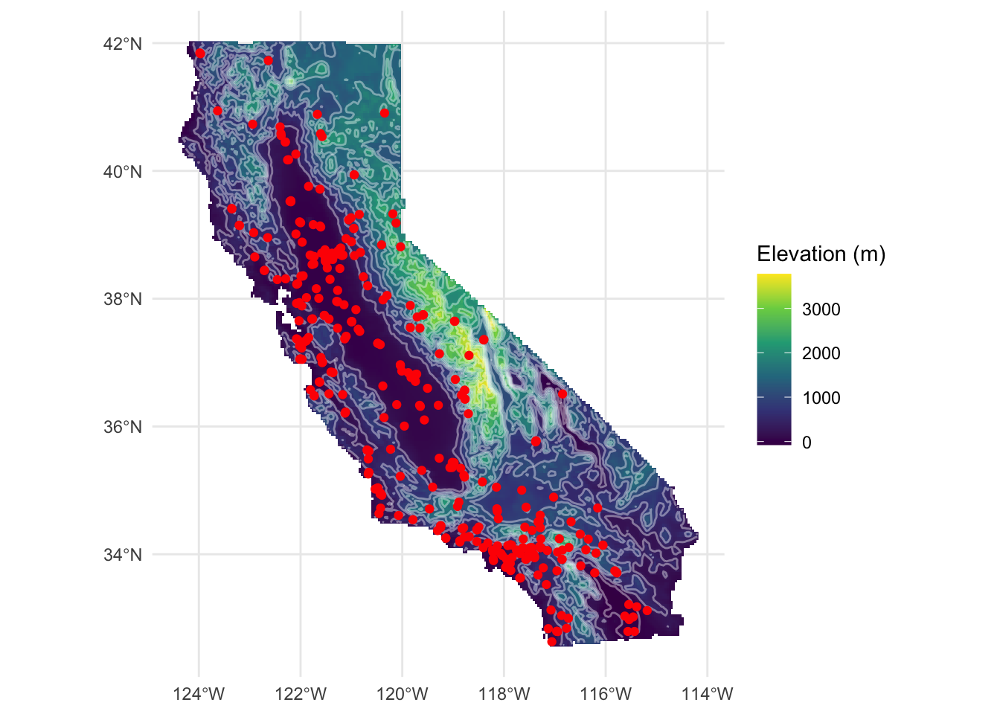

There is a lot to know about spatial data in R. A lot. Object classes, coordinate reference systems, projections, spatial joins, raster math, vector operations. It goes deep fast. We aren’t going to go there. This is not a GIS-in-R course, and these notes are not a substitute for one.
If you want the full treatment, two resources will serve you well. Geocomputation with R by Lovelace, Nowosad, and Muenchow is the best book on the subject and it’s free online. The Data Carpentries spatial curriculum covers the fundamentals in a hands-on workshop format. Work through either of those and you’ll come out knowing a lot more than we need here.
What we do need is a working vocabulary for two things: point data and raster data. Those are the main characters in this book. Polygons and lines show up occasionally but they aren’t the focus.
So that’s the plan for this chapter. Quick introduction to sf for points. Quick introduction to terra for rasters. Then we move on.
We’ll use three packages in this chapter. tidyverse(Wickham 2023) for general data wrangling, sf(Pebesma 2026) for vector spatial data, and terra(Hijmans 2026) for rasters. You’ll see these same packages throughout the book. Full citations are in the References chapter at the back.
Points with sf
The sf package handles vector data in R: points, lines, and polygons. We care about points. An sf object looks like a data frame, which is intentional. It is a data frame, with one extra column that holds the geometry.
The coords argument says which columns are the coordinates. The crs = 4326 sets the coordinate reference system, in this case WGS84 geographic coordinates (longitude/latitude), which is what you get from a GPS or most downloaded occurrence data.
Now R knows these are spatial points. You can plot them:
Code
plot(californiaOzonePointsSF)

A few things worth knowing about sf objects before we move on:
Generic functions work on them.plot(), summary(), and print() all know what to do with an sf object. We’ll talk more about how R handles this in the Methods and Generics aside, but the short version is: the same function call does sensible things regardless of what you hand it.
The geometry column sticks around. When you use dplyr verbs like filter() or select() on an sf object, the geometry column comes along for the ride. You don’t have to do anything special.
CRS matters. If you try to do spatial operations on two sf objects with different coordinate systems, you’ll get an error. Good. R is catching a real problem. Transform with st_transform() when you need to match them up.
Rasters with terra
Raster data is a grid, a matrix of cells each holding a value, covering some extent of the Earth’s surface. Elevation, temperature, precipitation, land cover: these are all commonly stored as rasters.
The .tif format (GeoTIFF) is the most common way you’ll encounter rasters in the wild. Think of it as an image file with spatial metadata baked in. If you’ve opened a satellite image or a scanned map, you’ve seen a TIFF. The “Geo” part means it knows where on Earth it lives: the extent, the resolution, the CRS. terra reads it the same way you’d read any raster, and the spatial info comes along automatically.
The terra package handles rasters in R. Its main object is a SpatRaster.
class : SpatRaster
size : 233, 279, 1 (nrow, ncol, nlyr)
resolution : 0.04174499, 0.04174499 (x, y)
extent : -124.9883, -113.3414, 32.42926, 42.15584 (xmin, xmax, ymin, ymax)
coord. ref. : lon/lat WGS 84 (EPSG:4326)
source : californiaElevation.tif
name : elev
min value : -73.91035
max value : 3773.89307
That output tells you the essentials: dimensions (rows and columns), resolution (how big each cell is), extent (the geographic bounding box), and CRS. Check those before you do anything else with a new raster. Surprises in any of those fields will cause problems later.
Code
plot(californiaElevation)

A few things worth knowing about terra objects:
Layers. A SpatRaster can have multiple layers, think of it like a stack of grids, one per variable or time step. You index into them with [[]]. One layer is still a SpatRaster, just a simple one.
Raster math is cell-wise. Operations apply to every cell at once, like working with a vector. No loops needed.
californiaElevation > 500 gives you a logical raster of cells above 500 meters. It’s fast because terra handles the iteration internally.
Before we extract, here’s the payoff for having both objects in the same space. We can plot the ozone stations on top of the elevation surface in one shot. To do that with ggplot2, we first convert the raster to a plain data frame, then layer in the points with geom_sf().
Code
elevDF <-as.data.frame(californiaElevation, xy =TRUE)names(elevDF)[3] <-"elevation"ggplot() +geom_raster(data = elevDF, aes(x = x, y = y, fill = elevation)) +geom_contour(data = elevDF, aes(x = x, y = y, z = elevation),color ="white", alpha =0.4, bins =15) +geom_sf(data = californiaOzonePointsSF, color ="red", size =1.5) +scale_fill_viridis_c(name ="Elevation (m)") +coord_sf() +theme_minimal() +labs(x =NULL, y =NULL)

The monitoring stations cluster in the valleys and along the coast, which makes sense. Nobody builds an ozone monitor on top of a mountain.
Extracting values at points. You’ll do this constantly: you have point observations and a raster surface, and you want to know the raster value at each point location. terra::extract() does it. The terra:: prefix is intentional. extract() exists in other packages too, and if you’ve loaded tidyverse, there’s a good chance the wrong one is sitting on top. Being explicit saves you a confusing error.
A field ecologist records species observations at GPS points. You want to know the elevation, the climate, the land cover at each location. terra::extract() is how you get there.
Projections: Why You Want to Be on a Plane
Longitude and latitude are angles, not distances. A degree of longitude at the equator is about 111 km wide. At 60 degrees north, it’s roughly half that. This matters because almost everything we do in spatial analysis, computing distances between points, fitting variograms, running kernel density estimation, assumes we’re working in flat Euclidean space where a unit in the x-direction is the same size as a unit in the y-direction, everywhere on the map.
In geographic coordinates, that assumption is wrong. And the further you get from the equator, the more wrong it gets.
The fix is to project your data onto a plane. For California, a sensible choice is CA Albers (EPSG:3310), an equal-area projection designed for the state. Coordinates come out in meters, distances are meaningful, and the analysis methods in the rest of this book will behave the way they’re supposed to.
class : SpatRaster
size : 268, 267, 1 (nrow, ncol, nlyr)
resolution : 4102.271, 4102.271 (x, y)
extent : -469783.1, 625523.3, -620345.7, 479063 (xmin, xmax, ymin, ymax)
coord. ref. : NAD83 / California Albers (EPSG:3310)
source(s) : memory
name : elev
min value : -68.000
max value : 3645.142
You’ll notice the resolution changes when you reproject a raster. terra has to resample the grid to fit the new coordinate system. That’s normal. Check the extent and resolution in the output to make sure things look right.
From here on, we’ll work in projected coordinates. If you load data in geographic coordinates, reproject it before doing any analysis. Make it a habit.
What’s Next
You now know enough to follow along. We have sf for our point observations and terra for our gridded surfaces. The chapters ahead use both, and you’ll get more comfortable with them as we go.
Starting with Point Patterns, we’re going to ask the most basic spatial question: are these points randomly distributed, or is there structure? You’d be surprised how much that question opens up.